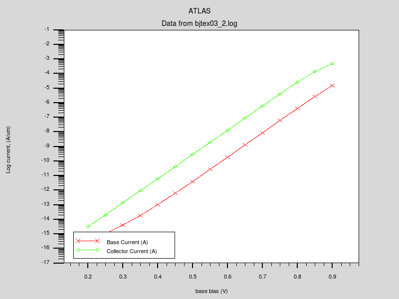
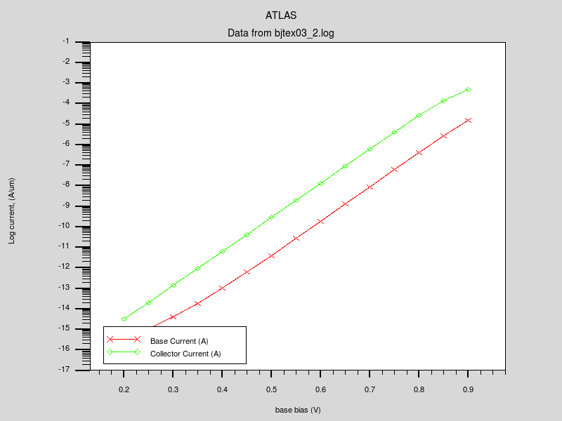
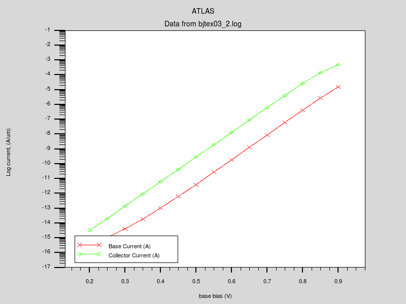

| Requires: | SSuprem 4/DevEdit/S-Pisces |
| Minimum Versions: | Athena 5.22.3.R, Atlas 5.26.1.R |

This example has been created with two symmetrical extrinsic base contacts in an effort to more clearly demonstrate the use of the contact statement for slaving electrode contacts together. This example is equivalent to the first example in this section in all other respects. It shows:
The process simulation, remeshing and basic device simulation syntax used in this example is exactly equivalent to the first example in this section. The difference is in the use to two 'tied' electrodes.
The electrode names
base and
base1 are defined within Athena and are then held together with the
contact name=base common=base1
statement within Atlas.
Thus, the subsequent use of the name
v."base" in the
solve statements will apply to both the
base contact and the
base1 contact.
The extract statement at the end of the file makes the addition of the currents from two base contacts for parameter extraction purposes.
To load and run this example, select the Load button in DeckBuild > Examples. This will copy the input file and any support files to your current working directory. Select the Run button in DeckBuild to execute the example.